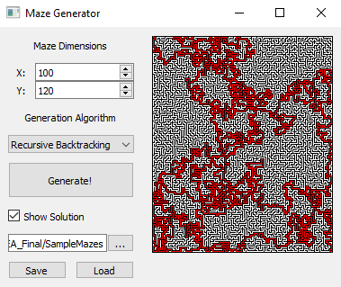
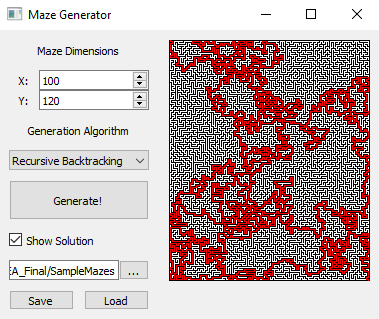

Maze Generator
My GCSE NEA project was a program written in Python exploring maze generation algorithms.
It allows for the choice from 4 separate generation algorithms, and can also display the solution (solved using Dijkstra's shortest path).
Additionally, mazes can be both imported and exported as images. More detail is provided in the write-up.
 
